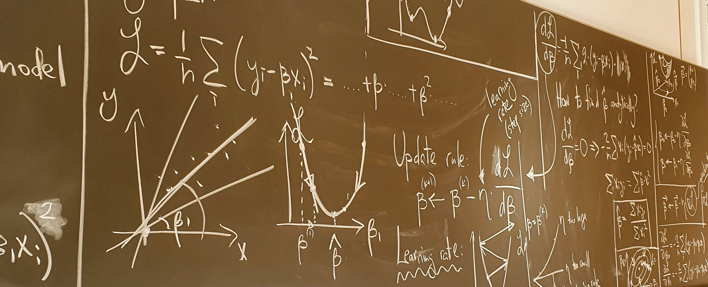

Die Veranstaltung wird für BSc Studenten an der Fakultät für Physik und Astronomie der Universität Heidelberg angeboten. Die Vorlesung (SWS: 4, Leistungspunkte: 6) wird im WiSe 2023/24 das erste Mal angeboten und wird auf Deutsch gehalten.
Der Dozent: Dr Dmitry Kobak leitet eine Forschungsgruppe zu Dimensionsreduktion an der Universität Tübingen und vertritt im Wintersemester 23/24 die Professur für Hochdimensionale Bildverarbeitung in Heidelberg.
Wann/wo: Vorlesung: Mittwoch 14:00–15:45. Seminar: Mittwoch 16:00–17:45. Die Veranstaltung findet im INF 308, HS 2 (Physik Kleiner Hörsaal) statt.
Die Vorlesung setzt keine Vorkenntnisse in Statistik oder Maschinellem Lernen voraus, aber Studenten sollten mit Analysis und grundlegenden linearen Algebra vertraut sein. Die Vorlesung wird von praktischen Übungen ergänzt, die in der Programmiersprache Python durchgeführt werden; Vorkenntnisse in Python, oder einer anderen Programmiersprache, sind von Vorteil.
Die Vorlesung findet größtenteils an der Tafel statt. Wir werden wöchentlich mathematische Übungen und im Laufe des Semesters mehrere praktische Übungen in Python durchführen. Um zur Abschlussprüfung zugelassen zu werden, müssen 70% der Mathematikübungen abgeschlossen werden.
In den Jahren 2019–23 habe ich einen ähnlichen Kurs auf MSc-Niveau in Tübingen unterrichtet. Die Vorlesung vom Wintersemester 2020/21 (auf Englisch) wurde aufgezeichnet, die Videos sind online verfügbar: Tübingen Machine Learning / Introduction to Machine Learning.
Inhalte: Verlustfunktion, Gradientenabstieg, lineare Regression, maximale Wahrscheinlichkeit, Bias und Varianz, Überanpassung (overfitting) und Regularisierung, Modellauswahl, logistische Regression, lineare Diskriminanzanalyse, neuronale Netze, convolutional neural nets, Boosting, random forests, k-means-Algorithmus, Gaußsche Mischmodelle, PCA, SVD, t-SNE.
Um ein Gefühl für die Vorlesung zu vermitteln: So kann die Tafel normalerweise aussehen: 